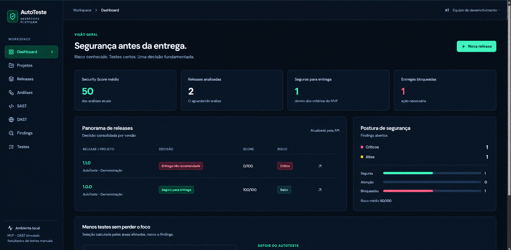

Testes manuais consomem tempo
Repetir os mesmos testes a cada versão atrasa a entrega.
2º Hackathon IFC Concórdia
Descubra a falha antes que o seu cliente descubra.
Ele testa o seu programa de forma estática e dinâmica, automaticamente, e diz se a versão está segura para entrega. Sem montar ferramentas, sem testar na mão.
Quando tudo é manual, a equipe perde tempo e as falhas chegam ao usuário. Corrigir depois da entrega custa mais do que achar antes.
Repetir os mesmos testes a cada versão atrasa a entrega.
Sem resultados organizados, o debugging vira uma caça demorada.
Vulnerabilidades só aparecem depois que o programa já está em uso.
Você cadastra o programa e o AutoTeste executa as análises sozinho.
O AutoTeste combina as duas análises para cobrir o que uma sozinha deixaria passar.
A análise estática percorre o código-fonte do seu programa e aponta falhas, más práticas e pontos vulneráveis ainda na escrita.
A análise dinâmica executa a aplicação e simula o uso real para descobrir falhas que só aparecem durante a execução.
Painel com o Security Score, as releases analisadas e os problemas encontrados.

Ele resolve problemas diferentes para quem programa e para quem responde pelo resultado.
Para quem desenvolve
Para a empresa
Assinatura mensal. Escolha pelo volume de análises.
R$ 200/mês
Todas as funções, exceto SAST e DAST.
R$ 400/mês
SAST + DAST em até 50 análises por mês.
R$ 600/mês
Tudo ilimitado.